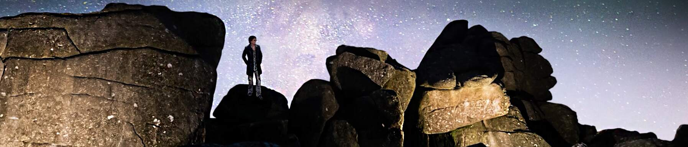
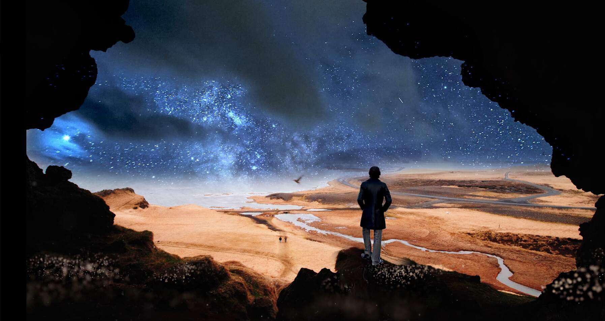
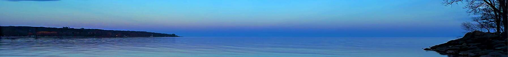

Jung Station is a musical project created by award-winning Songwriter/ Composer / Producer Anthony Vanderburgh.
“Jung Station is a vehicle to get a backlog of my unreleased songs out there,” Vanderburgh says. “I discovered a dusty old cassette of The Night That Time Stood Still— a heart wrenching piece I always loved. I suddenly realized it needed a third section and added the extended guitar solo. This new version was recorded over a few days, and with Zlatko Cetinic directing, we froze our butts off shooting the video at Toronto’s Kew Beach in February 2023.”
Jung Station is working up new songs.
Thanks for visiting and stay tuned for more!


